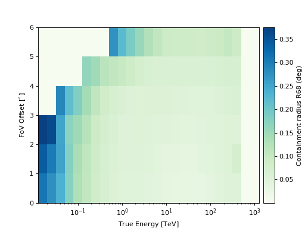

EnergyDependentMultiGaussPSF#
- class gammapy.irf.EnergyDependentMultiGaussPSF(axes, data=0, unit='', is_pointlike=False, fov_alignment=FoVAlignment.RADEC, meta=None, interp_kwargs=None)[source]#
Bases:
ParametricPSFTriple Gauss analytical PSF depending on true energy and offset.
- Parameters:
Examples
Plot R68 of the PSF vs. offset and true energy:
import matplotlib.pyplot as plt from gammapy.irf import EnergyDependentMultiGaussPSF filename = '$GAMMAPY_DATA/cta-1dc/caldb/data/cta/1dc/bcf/South_z20_50h/irf_file.fits' psf = EnergyDependentMultiGaussPSF.read(filename, hdu='POINT SPREAD FUNCTION') psf.plot_containment_radius(fraction=0.68) plt.show()
 Attributes Summary
MapAxes.Alignment of the field of view coordinate axes, see
FoVAlignment.Whether the IRF explicitly depends on offset.
Whether the IRF is pointlike of full containment.
Quantity.
Map unit as a
Unit.Methods Summary
containment(rad, **kwargs)Containment of the PSF at given axes coordinates.
containment_radius(fraction[, factor])Containment radius at given axes coordinates.
cumsum(axis_name)Compute cumsum along a given axis.
evaluate(rad, **kwargs)Evaluate the PSF model.
evaluate_containment(rad, **kwargs)Containment of the PSF at given axes coordinates.
evaluate_direct(rad, **kwargs)Evaluate PSF model.
evaluate_parameters(energy_true, offset)Evaluate analytic PSF parameters at a given energy and offset.
from_hdulist(hdulist[, hdu, format])Create from
HDUList.from_table(table[, format])Create parametric PSF from
Table.info([fraction, energy_true, offset])Print PSF summary information.
integral(axis_name, **kwargs)Compute integral along a given axis.
integrate_log_log(axis_name, **kwargs)Integrate along a given axis.
interp_missing_data(axis_name)Interpolate missing data along a given axis.
is_allclose(other[, rtol_axes, atol_axes])Compare two data IRFs for equivalency.
Normalize parametric PSF.
pad(pad_width, axis_name, **kwargs)Pad IRF along a given axis.
peek([figsize])Quick-look summary plots.
plot_containment_radius([ax, fraction, ...])Plot containment image with energy and theta axes.
plot_containment_radius_vs_energy([ax, ...])Plot containment fraction as a function of energy.
plot_psf_vs_rad([ax, offset, energy_true])Plot PSF vs rad.
read(filename[, hdu, format])Read from file.
slice_by_idx(slices)Slice sub IRF from IRF object.
to_hdulist([format])Write the HDU list.
to_psf3d([rad])Create a PSF3D from a parametric PSF.
to_table([format])Convert PSF table data to table.
to_table_hdu([format])Convert to
BinTableHDU.to_unit(unit)Convert IRF to unit.
write(filename, *args, **kwargs)Write IRF to fits.
Attributes Documentation
- axes#
MapAxes.
- data#
- default_interp_kwargs = {'bounds_error': False, 'fill_value': 0.0}#
- fov_alignment#
Alignment of the field of view coordinate axes, see
FoVAlignment.
- has_offset_axis#
Whether the IRF explicitly depends on offset.
- is_pointlike#
Whether the IRF is pointlike of full containment.
- quantity#
Quantity.
- required_axes = ['energy_true', 'offset']#
- required_parameters = ['sigma_1', 'sigma_2', 'sigma_3', 'scale', 'ampl_2', 'ampl_3']#
- tag = 'psf_3gauss'#
Methods Documentation
- containment(rad, **kwargs)#
Containment of the PSF at given axes coordinates.
- containment_radius(fraction, factor=20, **kwargs)#
Containment radius at given axes coordinates.
- cumsum(axis_name)#
Compute cumsum along a given axis.
- Parameters:
- axis_namestr
Along which axis to integrate.
- Returns:
- irf
IRF Cumsum IRF.
- irf
- evaluate(rad, **kwargs)#
Evaluate the PSF model.
- static evaluate_containment(rad, **kwargs)[source]#
Containment of the PSF at given axes coordinates.
- Parameters:
- rad
Quantity Rad value.
- **kwargsdict
Parameters, see
required_parameters.
- rad
- Returns:
- containment
ndarray Containment.
- containment
- static evaluate_direct(rad, **kwargs)[source]#
Evaluate PSF model.
- Parameters:
- rad
Quantity Rad value.
- **kwargsdict
Parameters, see
required_parameters.
- rad
- Returns:
- value
ndarray PSF value.
- value
- evaluate_parameters(energy_true, offset)#
Evaluate analytic PSF parameters at a given energy and offset.
Uses nearest-neighbor interpolation.
- classmethod from_hdulist(hdulist, hdu=None, format='gadf-dl3')#
Create from
HDUList.- Parameters:
- hdulist
HDUList HDU list.
- hdustr
HDU name.
- format{“gadf-dl3”}
Format specification. Default is “gadf-dl3”.
- hdulist
- Returns:
- irf
IRF IRF class.
- irf
- classmethod from_table(table, format='gadf-dl3')#
Create parametric PSF from
Table.- Parameters:
- table
Table Table information.
- format{“gadf-dl3”}, optional
Format specification. Default is “gadf-dl3”.
- table
- Returns:
- psf
ParametricPSF PSF class.
- psf
- info(fraction=(0.68, 0.95), energy_true=<Quantity [[ 1.], [10.]] TeV>, offset=<Quantity 0. deg>)#
Print PSF summary information.
The containment radius for given fraction, energies and thetas is computed and printed on the command line.
- Parameters:
- fractionlist, optional
Containment fraction to compute containment radius for, between 0 and 1. Default is (0.68, 0.95).
- energy_true
Quantity, optional Energies to compute containment radius for. Default is ([1.0], [10.0]) TeV.
- offset
Quantity, optional Offset to compute containment radius for. Default is 0 deg.
- Returns:
- infostring
Formatted string containing the summary information.
- integral(axis_name, **kwargs)#
Compute integral along a given axis.
This method uses interpolation of the cumulative sum.
- Parameters:
- axis_namestr
Along which axis to integrate.
- **kwargsdict
Coordinates at which to evaluate the IRF.
- Returns:
- array
Quantity Returns 2D array with axes offset.
- array
- integrate_log_log(axis_name, **kwargs)#
Integrate along a given axis.
This method uses log-log trapezoidal integration.
- Parameters:
- axis_namestr
Along which axis to integrate.
- **kwargsdict
Coordinates at which to evaluate the IRF.
- Returns:
- array
Quantity Returns 2D array with axes offset.
- array
- interp_missing_data(axis_name)#
Interpolate missing data along a given axis.
- is_allclose(other, rtol_axes=0.001, atol_axes=1e-06, **kwargs)#
Compare two data IRFs for equivalency.
- Parameters:
- other
gammapy.irfs.ParametricPSF The PSF to compare against.
- rtol_axesfloat, optional
Relative tolerance for the axis comparison. Default is 1e-3.
- atol_axesfloat, optional
Relative tolerance for the axis comparison. Default is 1e-6.
- **kwargsdict
Keywords passed to
numpy.allclose.
- other
- Returns:
- is_allclosebool
Whether the IRF is all close.
- normalize()#
Normalize parametric PSF.
- pad(pad_width, axis_name, **kwargs)#
Pad IRF along a given axis.
- peek(figsize=(15, 5))#
Quick-look summary plots.
- Parameters:
- figsizetuple, optional
Size of the figure. Default is (15, 5).
- plot_containment_radius(ax=None, fraction=0.68, add_cbar=True, axes_loc=None, kwargs_colorbar=None, **kwargs)#
Plot containment image with energy and theta axes.
- Parameters:
- ax
Axes, optional Matplotlib axes. Default is None.
- fractionfloat, optional
Containment fraction between 0 and 1. Default is 0.68.
- add_cbarbool, optional
Add a colorbar. Default is True.
- axes_locdict, optional
Keyword arguments passed to
append_axes.- kwargs_colorbardict, optional
Keyword arguments passed to
colorbar.- **kwargsdict
Keyword arguments passed to
pcolormesh.
- ax
- Returns:
- ax
Axes Matplotlib axes.
- ax
- plot_containment_radius_vs_energy(ax=None, fraction=(0.68, 0.95), offset=<Quantity [0., 1.] deg>, **kwargs)#
Plot containment fraction as a function of energy.
- Parameters:
- Returns:
- ax
Axes Matplotlib axes.
- ax
- plot_psf_vs_rad(ax=None, offset=<Quantity [0.] deg>, energy_true=<Quantity [ 0.1, 1., 10. ] TeV>, **kwargs)#
Plot PSF vs rad.
- classmethod read(filename, hdu=None, format='gadf-dl3')#
Read from file.
- slice_by_idx(slices)#
Slice sub IRF from IRF object.
- to_hdulist(format='gadf-dl3')#
Write the HDU list.
- Parameters:
- format{“gadf-dl3”}, optional
Format specification. Default is “gadf-dl3”.
- to_psf3d(rad=None)#
Create a PSF3D from a parametric PSF.
It will be defined on the same energy and offset values than the input PSF.
- to_table(format='gadf-dl3')#
Convert PSF table data to table.
- Parameters:
- format{“gadf-dl3”}
Format specification. Default is “gadf-dl3”.
- Returns:
- hdu_list
HDUList PSF in HDU list format.
- hdu_list
- to_table_hdu(format='gadf-dl3')#
Convert to
BinTableHDU.- Parameters:
- format{“gadf-dl3”}, optional
Format specification. Default is “gadf-dl3”.
- Returns:
- hdu
BinTableHDU IRF data table HDU.
- hdu
- to_unit(unit)#
Convert IRF to unit.
{kind=link}
{kind=link}